HISTORY · STYLE · ROMANCE
An award-winning 1908 Colonial Revival inn and spa in Asheville's Montford Historic District — English gardens, London-inspired rooms and a mile from downtown.
See Rooms & Rates Call (828) 251-2454Welcome
Designed by Richard Sharp Smith — supervising architect of the Biltmore Estate — Abbington Green is a Select Registry inn proudly located in the Montford Historic District, named North Carolina's "Best Old-House Neighborhood." Eight classically inspired guestrooms and suites, each with a king-size bed and whirlpool tub, surround prize-winning English-style gardens. Join us for the nightly 5pm social hour with local beers, ciders, wines and cheese plates, then wake to a two-course breakfast made with organic and local ingredients. The on-site spa, EV charging station and dog-friendly Carriage House suites complete the stay.
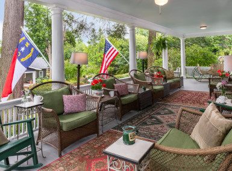
Porches, parlour and dining room in a lovingly preserved 1908 Colonial Revival home — winner of the Preservation Society's Griffin Award.
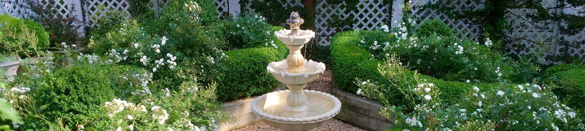
English-style gardens once named among the "Best New Gardens in the County" — shade, oriental, white rose and vegetable gardens to wander.
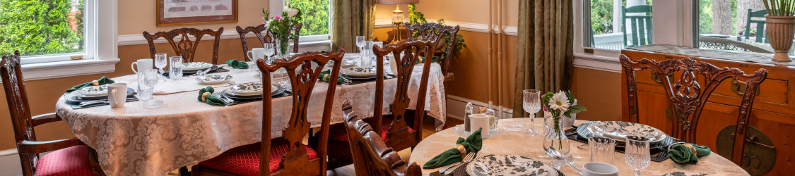
A satisfying two-course breakfast at 9am on crystal and china, plus spa treatments in the former ladies' parlour — book at least two weeks ahead.
Stay With Us
All rooms feature king-size beds, whirlpool tub with shower, mini-fridge and Comphy spa sheets. Rates below are for double occupancy, plus tax, as published on the inn's own website.
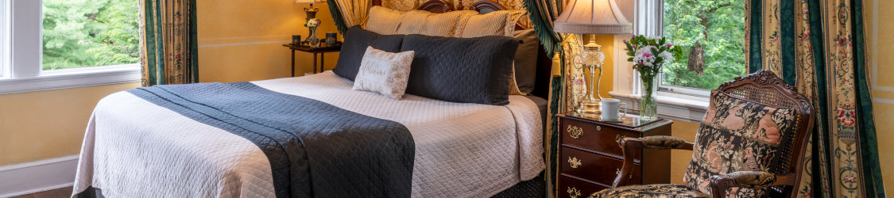
Generous main-house room with classic mahogany furnishings and marble bathroom.
$279 – $389 / night
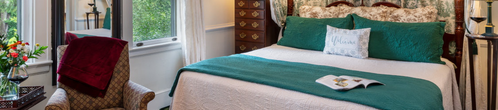
Second-floor main-house room in soothing greens and ivory, inspired by Kensington Palace gardens.
$259 – $369 / night
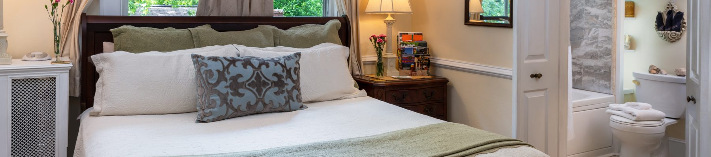
Our cosiest room — rose prints and hand-finished walls for a secret-garden escape.
$229 – $339 / night
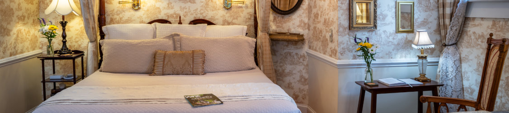
Carriage House suite (~300 sq ft) overlooking the Lower Garden — a honeymoon favourite.
$299 – $429 / night
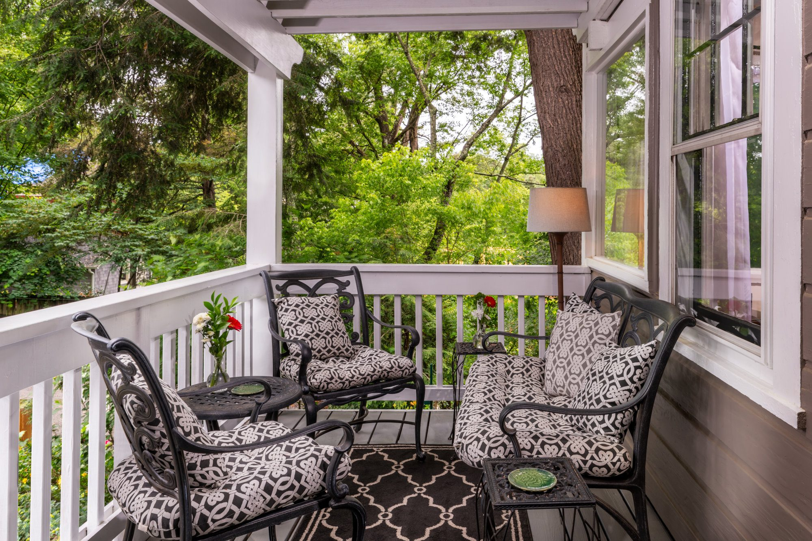
Our largest suite — 750 sq ft over two levels in the Carriage House, Belgravia-inspired, sleeps up to 5.
$339 – $469 / night
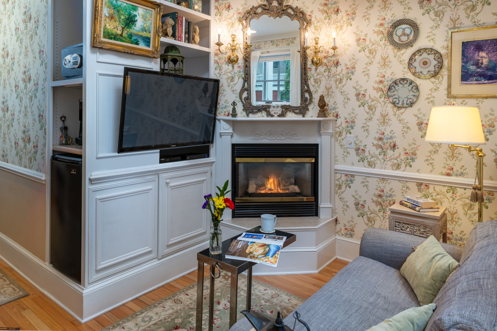
Dog-friendly Carriage House suite (~350 sq ft) with separate sitting room.
$299 – $429 / night
Also available: Kew Garden ($259 – $369) and Regent's Park ($229 – $339). Additional person $45 plus tax per night where applicable.
Gallery
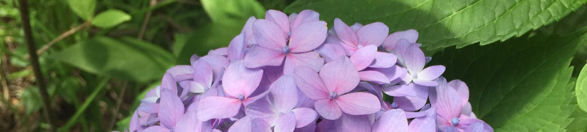
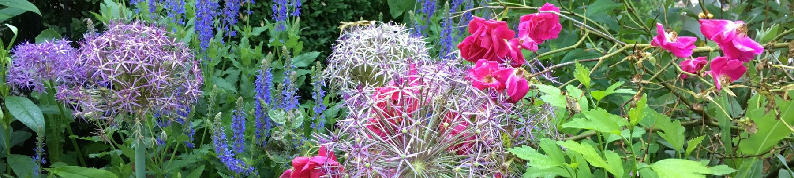
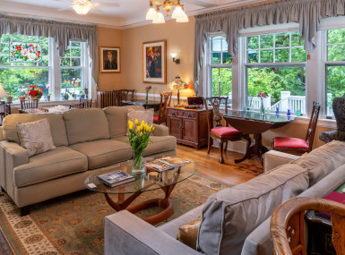
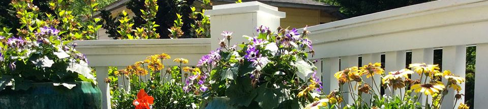
Less than a mile from downtown Asheville, 12 minutes from Biltmore Estate and 18 minutes from the Blue Ridge Parkway.
Call (828) 251-2454Contact
Abbington Green Bed & Breakfast Inn
46 Cumberland Circle, Asheville, NC
Phone: (828) 251-2454
Email: info@abbingtongreen.com